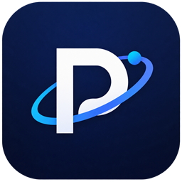

Proton
Build a Windows desktop application with HTML, CSS and JavaScript —
and ship it as one .exe.
You write an ordinary web application. Proton runs it in a real window, gives it access to files and a SQLite database, and packs the whole thing — engine, interface and all — into a single executable your users can double-click.
No installer. No Node.js. No .NET runtime to deploy. One file.
config.json, /generate, and shipping one file.
Download →
The latest Proton.exe from the releases page.
What it adds to a web page
A page in a browser
- Cannot read or write files
- Storage limited to the browser
- Lives inside tabs and toolbars
- Needs a server to be served
The same page in Proton
- Reads and writes real files
- Queries a local SQLite database
- Its own window, its own icon
- Everything inside the executable
Nothing else changes. Your HTML, your CSS, your framework if you use one — all of it works as it does in a browser, because it is a browser: Proton uses the WebView2 engine that Windows already ships.
What it looks like in code
Three APIs, all reached with plain fetch and relative URLs. No library
to install, nothing to import.
// Files
await fetch('/files/notes.txt', { method: 'PUT', body: 'hello' });
// SQLite
await fetch('/api/sqlite/app.db/execute', {
method: 'POST',
headers: { 'Content-Type': 'application/json' },
body: JSON.stringify({
sql: 'INSERT INTO notes (text) VALUES ($text)',
parameters: { $text: 'hello' }
})
});
// The application's own name and version, read from the executable
const app = await (await fetch('/api/app')).json();Your application never has to know where it sits on disk, nor which port was chosen. Relative URLs are enough. Full reference →
And one file to ship
Proton.exe /generate
With a two-line config.json, you get an executable carrying your name,
your icon, your Windows file properties and your application inside
it. Distribute that file, and nothing else.
How packaging works →
What Proton does not do
Worth knowing before you build on it. Proton is meant for local desktop applications, and it is honest about its edges.
- Windows only. 64-bit Windows 10 or 11.
- One window. No multi-window applications.
- No system access beyond files and databases. No registry, printers, devices or shell commands.
- No automatic updates. Shipping a new version means shipping a new executable.
- Local by design. The server listens on
127.0.0.1only and cannot be reached from the network. It carries no authentication, because there is nobody else to authenticate.
Requirements. Microsoft Edge WebView2, which ships with Windows 11 and with recent Windows 10 installs. No .NET runtime is needed — it travels inside the executable, which is why the file is around 63 MB.